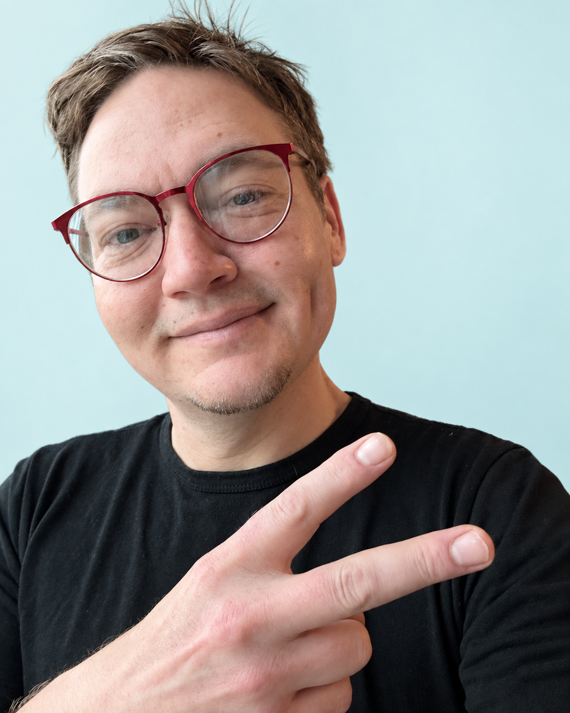

THE PERSON BEHIND THE PIXELS
Curiosity is
the throughline.
I’m Dale Pittman, a designer working across motion, visual storytelling and creative systems.
I’m drawn to the moment a complex idea becomes clear: a product story that clicks, a graphic that holds at a new scale, or a tool that makes the next creative decision easier.
My practice brings together design, editing and motion, with work across Gogo’s product stories, campaigns and event screens. I use emerging tools to explore and organize ideas, while keeping creative judgment in the work.

A CONNECTED PRACTICE
Design with intent.
Visual direction, graphic design, typography and brand expression. A coherent idea across every surface.
Stories in motion.
Editing, motion production and product narratives. From the first story structure to the finished sequence.
Systems for making.
Reusable motion structures, organized source material and creative prototypes. Work that gives the next idea a place to start.
HUMAN JUDGMENT, NEW POSSIBILITIES
The tools can change.
The care stays.
On SkyQuest, AI supported scripting and planning. I edited, built and presented the work. That relationship matters to me: use technology to widen the possibilities, then make deliberate choices.
Explore the SkyQuest story ↗